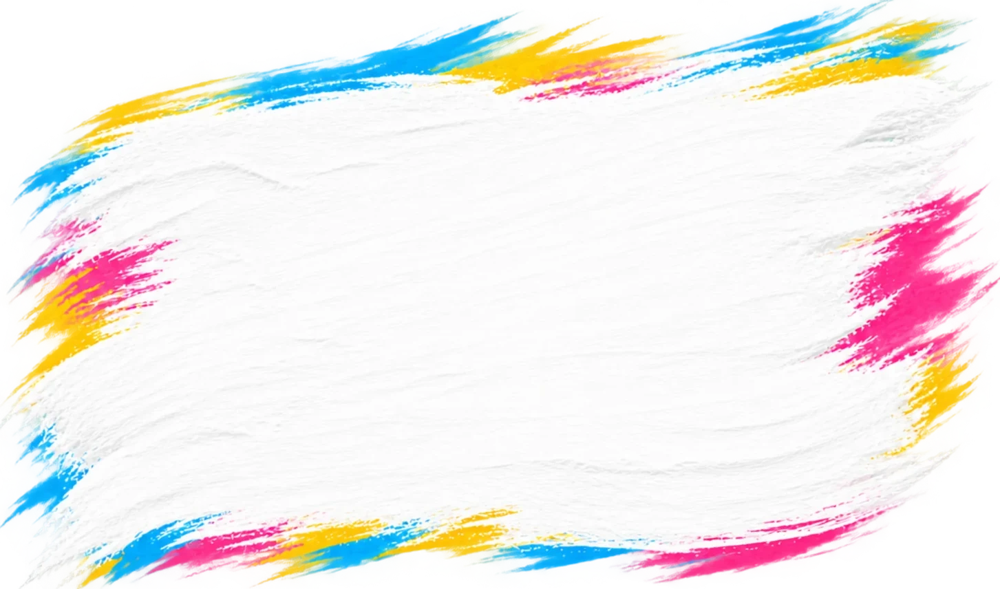
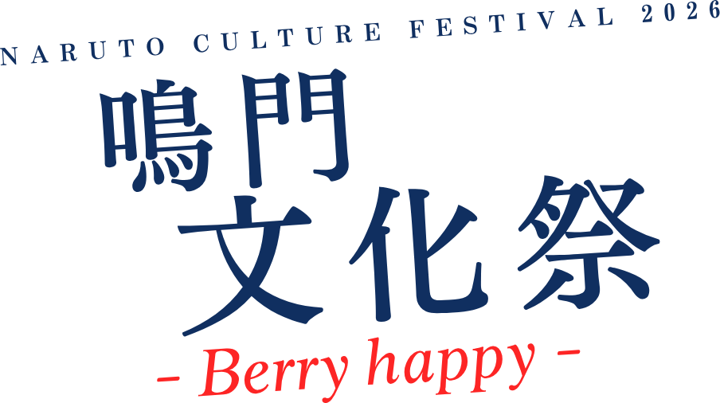

鳴門文化祭 -Berry happy-（NARUTO CULTURE FESTIVAL 2026）



楽しみ方から探す押すと、下の「おすすめの企画」がその企画だけになります
Pick up
おすすめの企画
ビジュアルは生成したイメージです。当日の会場・装飾・提供内容を示すものではありません。
Day to night
一日まるごと、楽しもう。
- 10:00
文化祭スタート
遊ぶ、食べる、観る、
気になる企画から楽しもう。 - 17:15ごろ
点灯式・夜の部へ
灯りとともに、
会場の表情が変わります。 - 19:00
文化祭終了
今日の思い出を、
それぞれの日常へ。
各企画の時間割は調整中です。
Information & Access
鳴門市北灘町折野字屋敷64-3 Googleマップで開く
文化祭の舞台は、旧校舎。
会場
TODAベリーファーム
旧北灘西小学校鳴門市北灘町折野字屋敷64-3 Googleマップで開く
- お車で
- 鳴門ICから約30分／引田ICから約15分（国道11号経由）
JR鳴門駅から車で約20分 - バスで
- 徳島バス引田線「鳴門駅前」から「北灘西小学校前」下車、徒歩約2分
館内の案内図は順次掲載します。
| 開催日時 | 2026年12月5日（土） 10:00〜19:00 |
|---|---|
| 入場料 | 無料飲食・一部企画は有料 |
| 駐車場 | 約200台 |
| 雨天 | 開催荒天などで中止する場合は、公式Instagramでお知らせします |
Volunteer
学生ボランティア募集
締切 11月21日（土）- 高校生・大学生が対象。会場装飾、お化け屋敷のスタッフやお化け役、縁日・カフェの準備など
- 事前準備（15時以降。学校終わりもOK）だけ、当日だけの参加も歓迎
- 昼食付き・ボランティア証明書を発行（交通費の支給はありません）
FAQ
来る前に、知っておきたいこと。
入場料はかかりますか？
入場は無料です。飲食と一部の企画（お化け屋敷など）は有料です。
お支払いの方法は？
当日のお支払いは現金でお願いします。
雨の日でも開催しますか？
雨天でも開催します。荒天などで中止する場合は、公式Instagramでお知らせします。
車で行けますか？ 駐車場はありますか？
会場に駐車場（約200台）があります。鳴門ICから約30分、引田ICから約15分（国道11号経由）です。
電車やバスで行けますか？
JR鳴門駅の近くの「鳴門駅前」から徳島バス引田線に乗り、「北灘西小学校前」で降りて徒歩約2分です。
お化け屋敷はいくらですか？ 昼でも入れますか？
参加費は200円です。昼は脱出ゲーム、夜はお化け屋敷として開きます。時間は決まり次第お知らせします。
各企画の時間やステージのタイムテーブルは？
決まり次第、このページと公式Instagramでお知らせします。点灯式は17:15ごろの予定です。
ボランティアとして参加できますか？
学生ボランティアを11月21日（土）まで募集しています。申込フォームからお申し込みください。
問い合わせはどこにすればよいですか？
お問い合わせのフォーム・電話・メールからどうぞ。